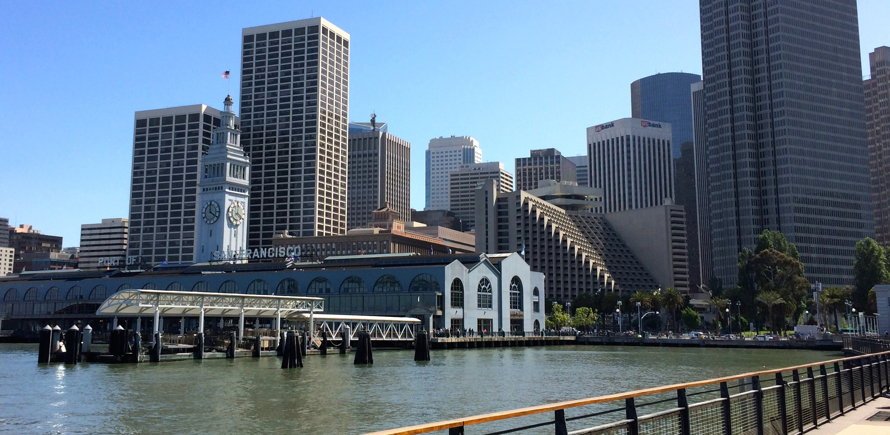

What's going on
by Ernie Salazar

I recently decided that a career change might be what I needed. After having a successful career in Retail Management, I was hungry for something more. While I don't take the decision to change paths lightly, especially at my age, I knew I wanted to be involved in something that excited me. With so much opportunity and potential ahead, I dove head first into an area that I've always been both interested in and passion about, technology. The future, my future will be in coding, programming and web development and I can't be more exhilarated.
Originally from Colorado, I've now lived in California for almost eight years. While those being the first and the current, I have also lived in Florida, Texas and Arizona. Perhaps I have a bit of explorer blood as I've always enjoyed new places and adventures. Apart from living throughout the United States, I have also done a fair share of traveling. Visiting Mexico, Germany, Denmark, Austria, Czech Republic, Greece, Netherlands, Belgium, France, Spain and Portugal. Perhaps it's that desire and enjoyment of new adventures that has led me to today.
about, san francisco, dev bootcamp
Current Obsessions